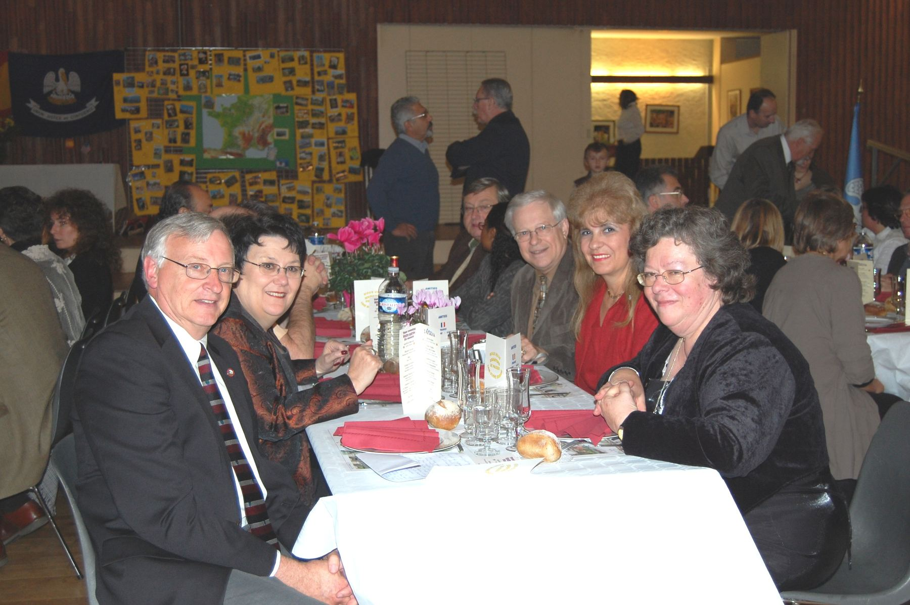
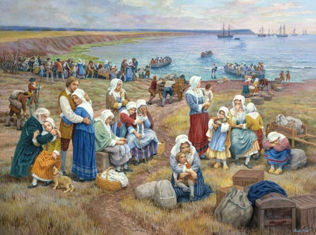

🤝
Amitié
Des liens durables avec nos villes jumelles, entretenus par des visites réciproques et l'accueil en familles.
Une poignée de main devenue un pont entre trois villes, la Louisiane et l'Espagne.
Tope Là ! construit et entretient des liens d'amitié, et des échanges culturels, sociaux, économiques, touristiques et sportifs, avec Hammond (États-Unis) et Cella (Espagne).
Voyages, soirées dansantes, repas entre amis, accueil des délégations, échanges entre écoles : l'association fait vivre le jumelage au quotidien. Elle est surtout connue pour son festival Cajun & Zydeco « Un pont vers la Louisiane », devenu un rendez-vous apprécié bien au-delà des Yvelines.

« Tope là ! »
C'est le geste de la main tendue pour conclure un accord : « d'accord, marché conclu, on y va ensemble ! » Tout est dit : l'engagement partagé, la confiance et la bonne humeur. C'est ce que nous aimons cultiver avec nos amis de Louisiane et d'Espagne.
Des liens durables avec nos villes jumelles, entretenus par des visites réciproques et l'accueil en familles.
Culturels, sociaux, économiques, touristiques et sportifs : le jumelage est une porte ouverte.
Bals, repas, soirées : on se retrouve, on partage et on danse ensemble.
L'association encourage et aide les échanges entre les écoles des villes jumelles.
Jouars-Pontchartrain se jumelle avec Hammond, en Louisiane — deux villes nichées entre des lacs, Pontchartrain et Maurepas, qui partagent un nom et une histoire.
Un groupe de membres rejoint Cella (Espagne) pour ses fêtes médiévales. Cette année-là naît aussi le festival Cajun & Zydeco, organisé tous les deux ans à la Pentecôte.
Voyage en Louisiane, puis voyage à Cella via Valence.
Cap sur Cella pour la « feria de la patata ».
Voyage en Espagne : de Madrid à Cella en passant par Tolède, Aranjuez et Cuenca.
20 ans de Tope Là ! Les 9, 10 et 11 novembre, les délégations de Cella et de Hammond sont accueillies en familles.
7ᵉ festival Cajun & Zydeco, du 18 au 20 mai, avec Leroy Thomas & The Zydeco Roadrunners.
Soirée rock'n'roll & rhythm and blues (16 mars) et voyage à Mardi Gras en Louisiane.
Grand loto de Tope Là ! le 16 mars.
Commune des Yvelines (78760), notre point d'ancrage. Son nom rappelle le comte de Pontchartrain, ministre de la Marine de Louis XIV, qui soutint la colonisation de la Louisiane, nommée par La Salle en 1682.
Plus grande ville de la paroisse de Tangipahoa, entre les lacs Pontchartrain et Maurepas. Jumelée avec Jouars-Pontchartrain depuis 1998. C'est elle qui inspire « Un pont vers la Louisiane ».
Seconde ville jumelle, accueillie lors de nombreux voyages : fêtes médiévales, « feria de la patata », visites croisées et échanges de jeunes.
« Cajun » vient d'« Acadien ». Chassés d'Acadie en 1755, les Acadiens se sont installés en Louisiane en gardant leur langue française et leur foi. De leurs chansons et de leurs bals est née la musique cajun, au violon et à l'accordéon, tandis que le zydeco s'est développé dans les communautés créoles noires. C'est cet héritage vivant que notre festival fait danser.
Le festival
La composition du bureau sera présentée ici. Les rôles ci-dessous sont des textes d'attente à compléter.
Contact de l'association
c.grajeon@wanadoo.fr
06 03 90 51 31
Nom à compléter.
Nom à compléter.
Nom à compléter.
Adhérent, bénévole ou simple curieux : il y a toujours une place à notre table.